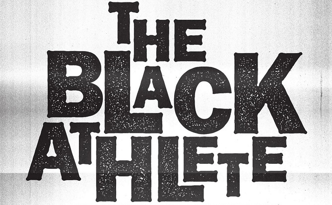

Tiger Kickoff
Missourian
Stories
This week's Matchups
Player Q-A
Quizzes
Archives
Blog
The Black Athlete

Schedule
Schedule
LATEST NEWS
WINNINGEST Take a look at therecord behind Missouri’s mostwinningest coach, Gary Pinkel,before he says goodbye to the team ths season
FIRST BLACK FOOTBALL PLAYER Norris Stevenson left his mark by leading the Missouri team to a win over Oklahoma during the 1960 season.
TODDLERS TO TIGERS This future Missori Tiger was “the epitome of having middle child syndrome,” according to his mother.